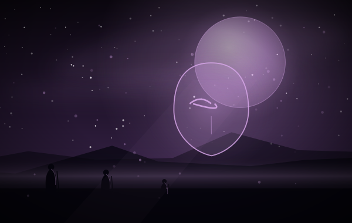
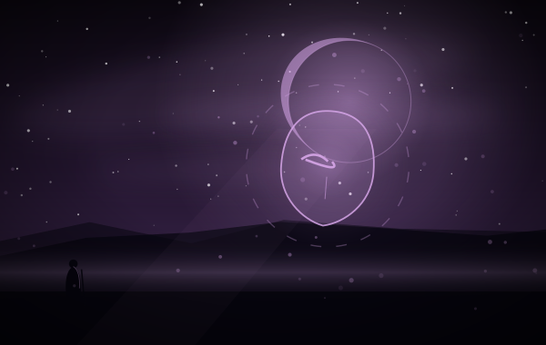
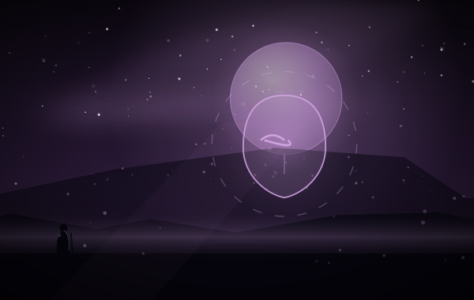
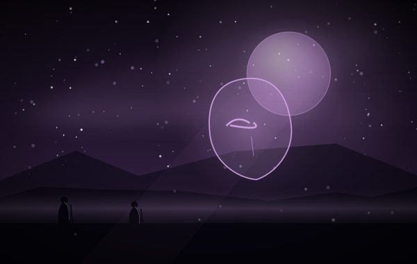
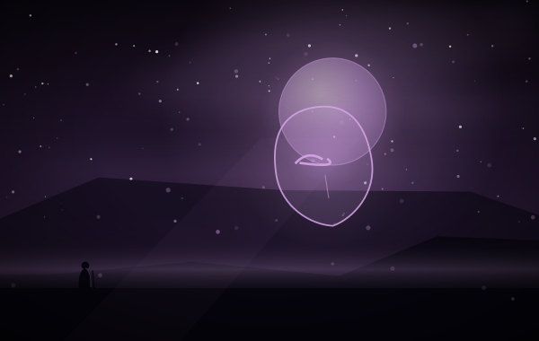
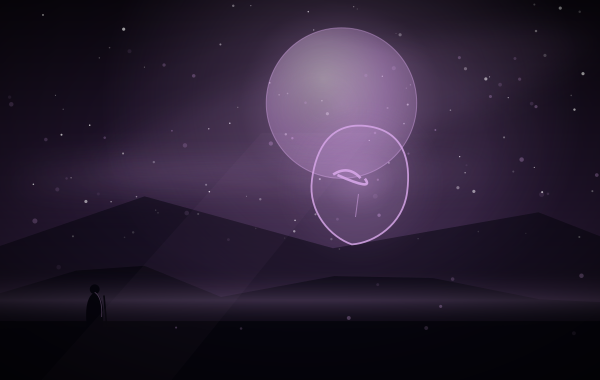
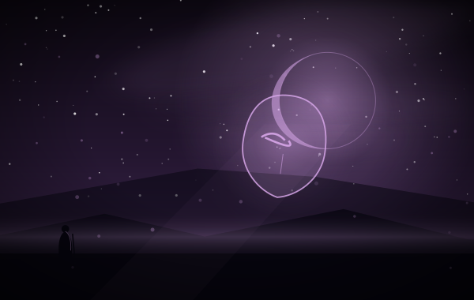

攻击即禁锢，先输出再控制
同一「伤害 = 英雄攻击力」的模板
奇袭补伤害，攻击本身补控制
新的勇者 › 莫伊卡编组
九张，一半禁锢，一半触发。陷阱与游弋挂在「敌方单位入场或行动」上，天罗地网把每次攻击变成一次禁锢。
英雄：莫伊卡 锁，和她自己的返场
类别：魔法 · 收藏上限 4
标签（归档者归纳，含规则词条）
这张卡面上没有出现规则词条：它的文本只用到通用规则，没有额外词条。
释义照录规则原文；标注「归档注」的是归档者补的说明。
2 费打一记物理伤害并抽一，击杀再抽一。它是莫伊卡的「主炮」，也是这套牌里少见的「击杀即赚牌」。和「破空」比，它少于限定、多了抽牌，代价是伤害永远等于英雄的当前攻击力 —— 没有成长，就没有后期的爆发。
——归档者，读这张卡的时候





